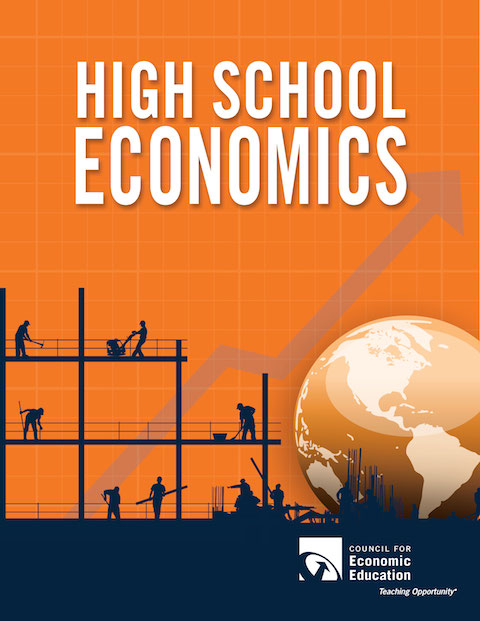

About the Book
To help teachers better teach economics, the Council for Economic Education revised and updated High School Economics. This new and revised 3rd Edition includes 28 engaging lessons which employ an active-learning approach that brings economic concepts to life for students. This resource has been:
- Updated to include more contemporary references that highlight new challenges in a world that has changed significantly since the 2nd edition 11 years ago
- Redesigned to meet the needs of today’s students and reflects current economic thinking
- Integrates more macroeconomics and international economics lessons including materials on topics such as GDP, unemployment, inflation, and trade
- Field-tested and aligned with Voluntary National Content Standards in Economics and Common Core State Standards (ELA and Math)
- Select lessons feature interactive online activities that connect to and extend the lessons both in class and as self-guided homework activities
$34.95